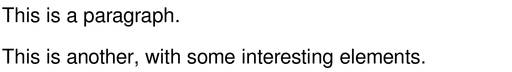

scribble-slideshow: Using Scribble to Make Slides
| #lang scribble-slideshow | |
| package: scribble-slideshow-lib | |
1 Introduction
This library provides both a language and a library for writing slideshows using Scribble notation. (To clarify, I don’t mean just using the at-exp reader with slideshow. I mean that the slides are written using Scribble forms, evaluated to Scribble document structures, and then rendered to slides and picts.) One benefit is that element styles cooperate automatically with line-breaking.
The scribble-slideshow library provides functions like flow-pict and scribble-slides that convert Scribble pre-flow into picts and emit slides from Scribble parts, respectively.
The scribble-slideshow language allows users to write Scribble documents that can automatically be run as slideshows. Like the scribble/base and scribble/manual languages, the contents of the module (minus requires, definitions, etc) are automatically gathered and interpreted as a Scribble document. The language emits a main submodule that converts the Scribble document to slides.
See the scribble-slideshow/examples directory for extended, runnable examples.
2 Scribble to Slides
procedure
(scribble-slides pre-part ...) → void?
pre-part : pre-part?
The style of each part can be used to control a slide’s layout and staging. See the extended examples for more details.
procedure
(part/make-slides proc) → part?
proc : (-> void?)
3 Scribble to Picts
| (require scribble-slideshow/pict) | |
| package: scribble-slideshow-lib | |
The exports of scribble-slideshow/pict are also available from scribble-slideshow.
produces the following pict:

4 Notes
The interpretation of Scribble style names and style properties is incomplete, and it is not customizable. It is sometimes inconsistent with slideshow’s defaults; for example, the default block width is wider.
The current hook for changing the base styles (current-sp-style) is likely to change in the future.
The default styles used by scribble-slides are different from those used by slide, so mixing the two will produce inconsistent-looking results. The rendering of titles is especially different.
Titles are not baseline-aligned, so titles that result in picts of different heights look inconsistent. This might be a slideshow issue.
Staging does not cooperate with slideshow’s –condense mode.